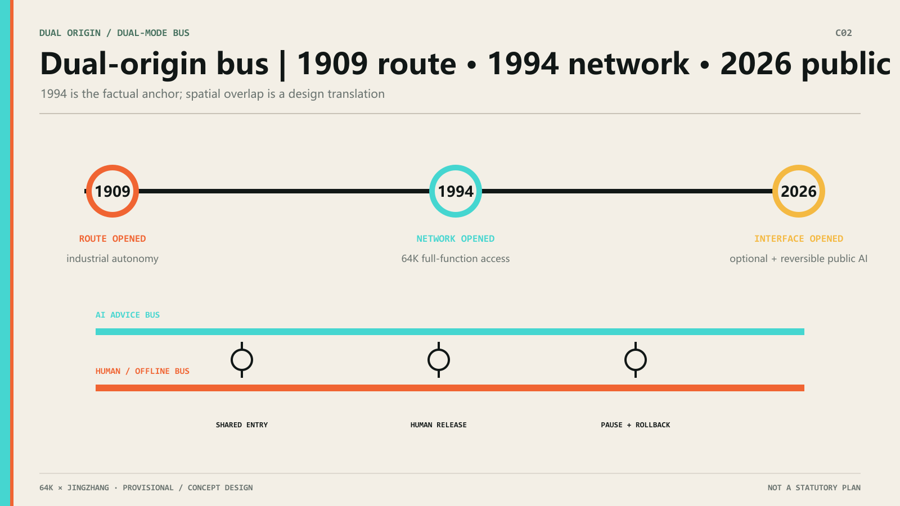
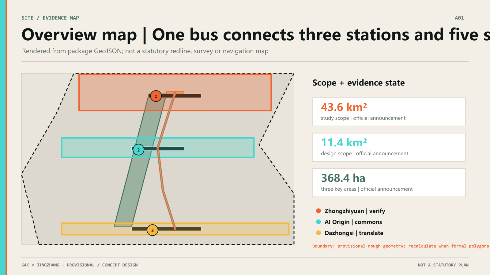
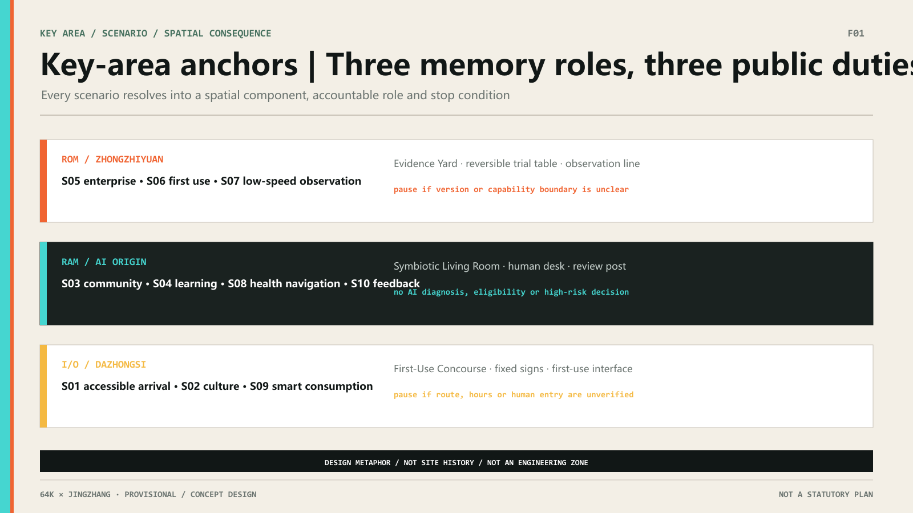
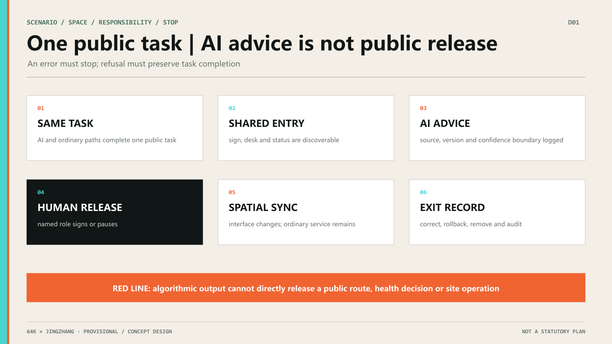
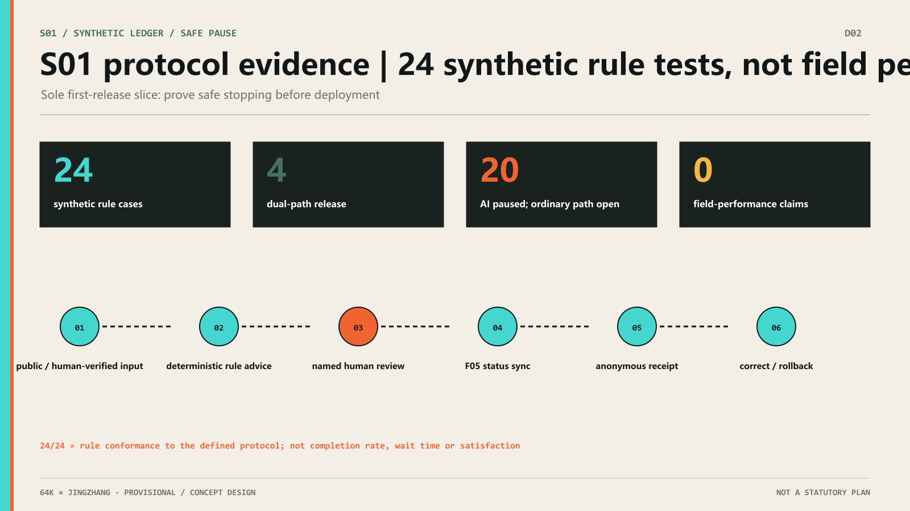
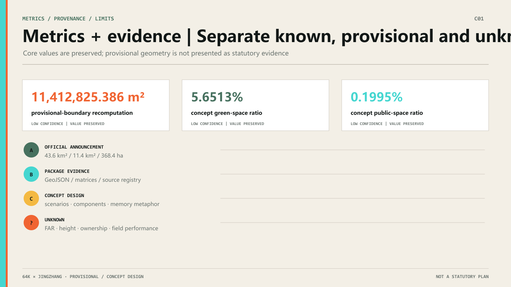
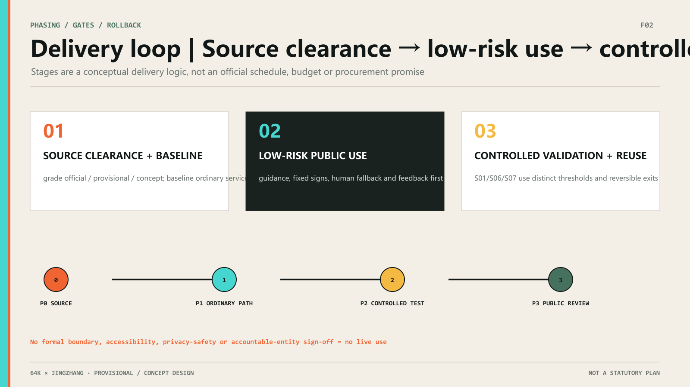

01 / DUAL ORIGIN
Jingzhang’s next opening gives public intelligence a visible entry, an equivalent human path and an auditable exit.
FACTUAL ANCHOR
On 20 April 1994, NCFC used a 64K international leased line to provide China with full-function Internet access.
DESIGN METAPHOR
64KB, 8×8, Demoscene and ROM / RAM / I/O turn constrained resources into a readable grammar of indexing, reuse and public interfaces.
MINIMUM VIABLE UNIT
64KB, 64 sqm and 64 hours are optional prototype scales: test one public experience with minimum resources, not a building or event commitment.
EVOLVING ADDRESS TABLE
Ten launch scenarios enter the address table; the remaining addresses form one open field, with a public task, spatial interface and accountable role required for each addition.
RETAIN · TRANSLATE · WITHDRAW
Keep heritage artifacts legible; let new layers translate rail into circuit language; allow digital cues to withdraw at memorial nodes.
THREE ZONES / MEMORY PARTITIONSZHONGZHIYUAN = KERNEL · AI ORIGIN COMMUNITY = USER · DAZHONGSI = APPLICATIONTWO WINGS / I-O EXTENSIONSZHONGGUANCUN SERVICE WING = EXPANSION CARD · XIAOYUEHE SCENARIO WING = PERIPHERAL

02 / SPATIAL BASE
Read three scope levels and three stations in one map
Every map is rendered from package GeoJSON. Official area values and provisional-boundary recomputations remain distinct.
Overview mapThree-level scopeKey areasLand useActive mobilityBlue-green public spaceBuildingsRenewal projectsAI scenariosCore metricsTask coverageSelf-check statusSourcesAssumptions

03 / ROM · RAM · I/O
Three stations are three public duties—not three icons
ZHONGZHIYUAN
Verification kernel
Rules, sources, versions and safety thresholds are checked before any public use.
S05 · S06 · S07AI ORIGIN COMMUNITY
Civic memory field
A low-digital-skill user can complete the same task by paper, phone, fixed signs or staff.
S03 · S04 · S08 · S10DAZHONGSI
City interface
AI advises and explains; a named human role releases, pauses, restores or exits.
S01 · S02 · S09FIVE FUNCTIONS × 64KFive functions are public interfaces shared by the three stations and two wings.

04 / 8 × 8 ADDRESS TABLE
64 addresses do not need 64 empty panels
The compact 8×8 map preserves the full code; ten defined scenes expand below, while addresses 11–64 form one open field.
8 × 8 / 64Ten colored addresses are defined; the rest remain open.
OPEN ADDRESS FIELD
Future scenes wait here as one field rather than 54 empty cards. Every addition needs a public task, spatial interface, human path and stop condition.
04B / DUAL-PATH DEMO
Choose a scene and compare two routes for the same task
Select any of the ten scenes above. The orange route completes the task independently; the cyan route advises and a human makes the release.
Accessible arrival
Reach the entrance and confirm a usable route
fixed signs → staffed desk → human escort
Completes the same task without AIHUMAN RELEASE GATECHOOSE · PAUSE · ROLLBACK
public conditions → AI route advice → human release
No final algorithmic authority05 / DUAL-MODE BUS
One task, two paths, one human release gate


06 / METRICS + PROVENANCE
One evidence board shows where each metric comes from

Official sources + limits
A / HISTORYCAS Computer Network Information Center20 Apr 1994 full-function 64K access. Internet history only; no site-history claim.
A / SCOPEOfficial announcement + taskbook43.6km², 11.4km², 368.4ha and six tasks; exact polygons remain absent.
B / PACKAGEGeoJSON + matrices + metricsRecomputable and auditable; current boundary and core ratios remain low-confidence.
C / CONCEPTH&S human–AI co-creationROM/RAM/I/O, 8×8 and the hero visual are design expressions, not field findings.
07 / DELIVERY + ROLLBACK
Prove safe stopping before discussing deployment
